Fresagem CNC
Remoção de material por fresas rotativas controladas por eixos simultâneos.
EscalaGrande lote
ControlePosicionamento CNC
VolumeProdução contínua
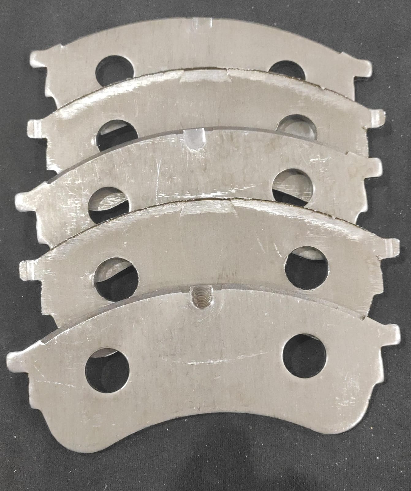
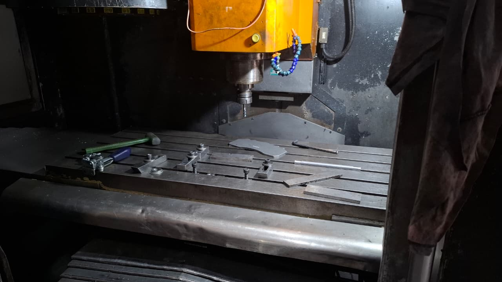
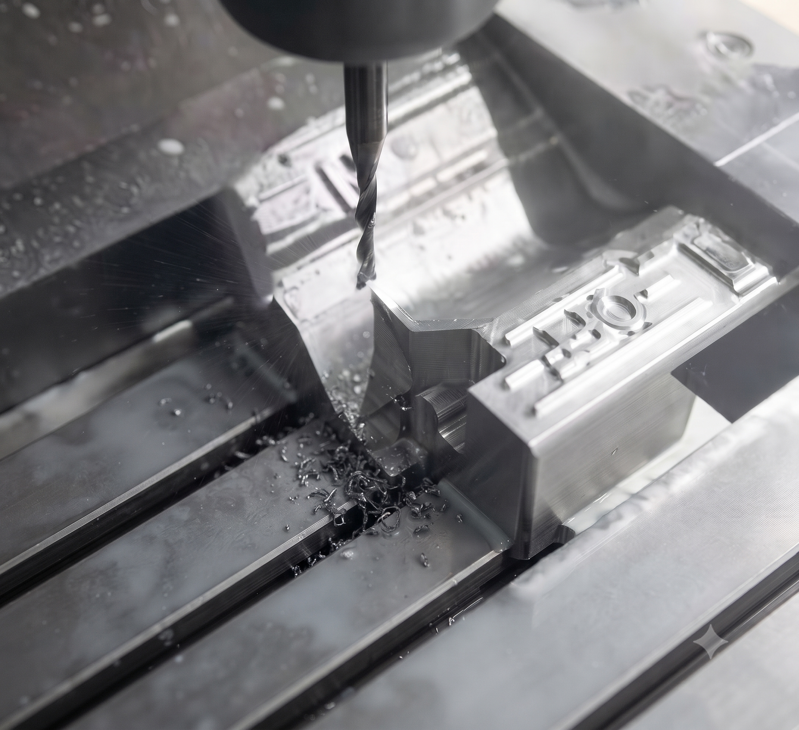
Somos especialistas na prestação de serviços de usinagem CNC voltados para a produção em série de grande escala. Entregamos alta demanda e grandes volumes com eficiência e economia.
Solicitar Orçamento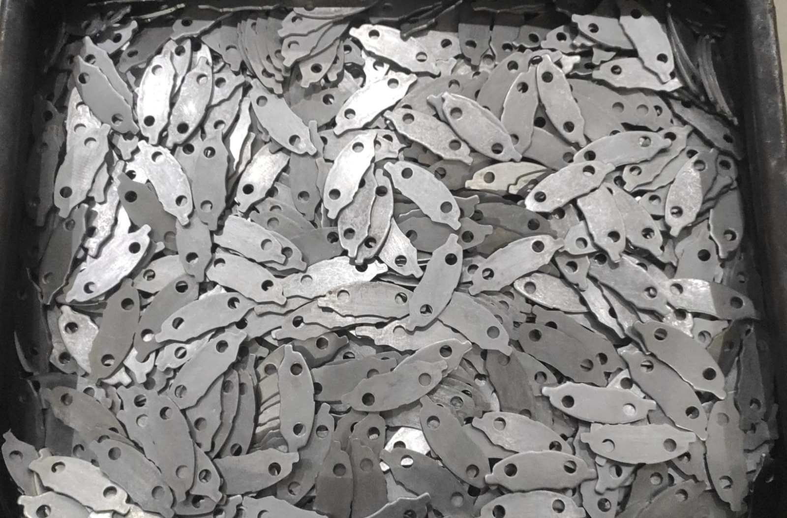
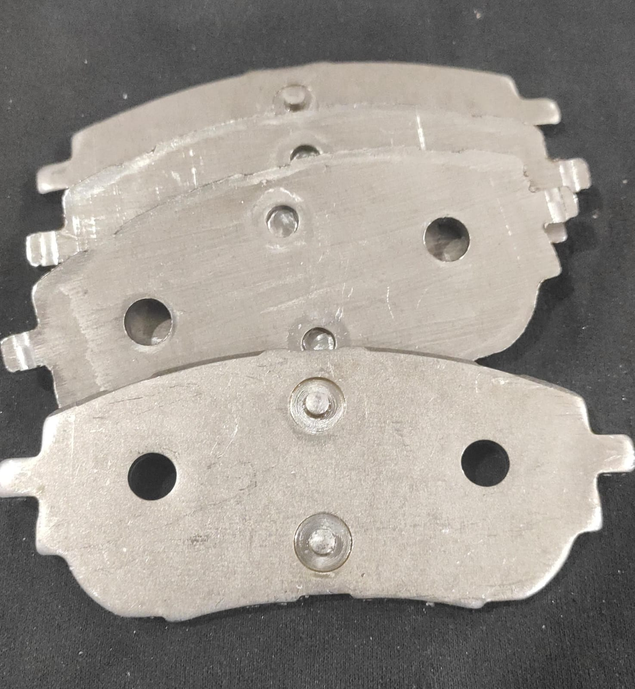
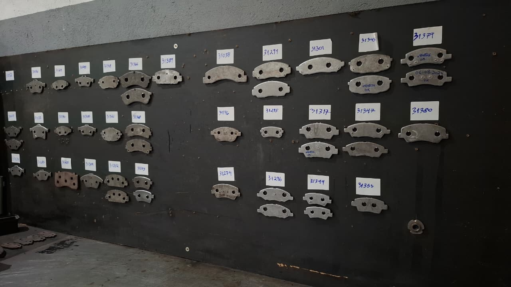
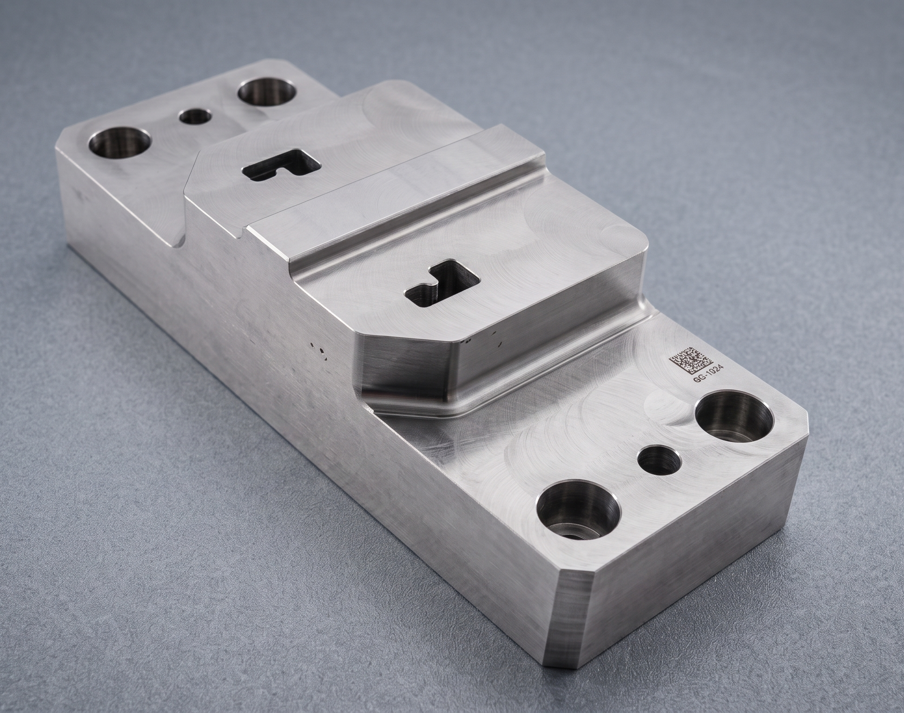
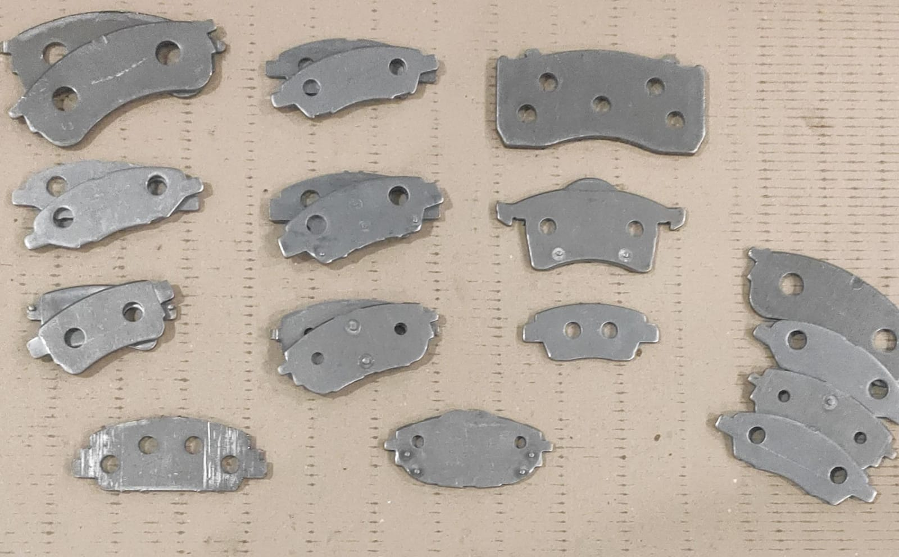
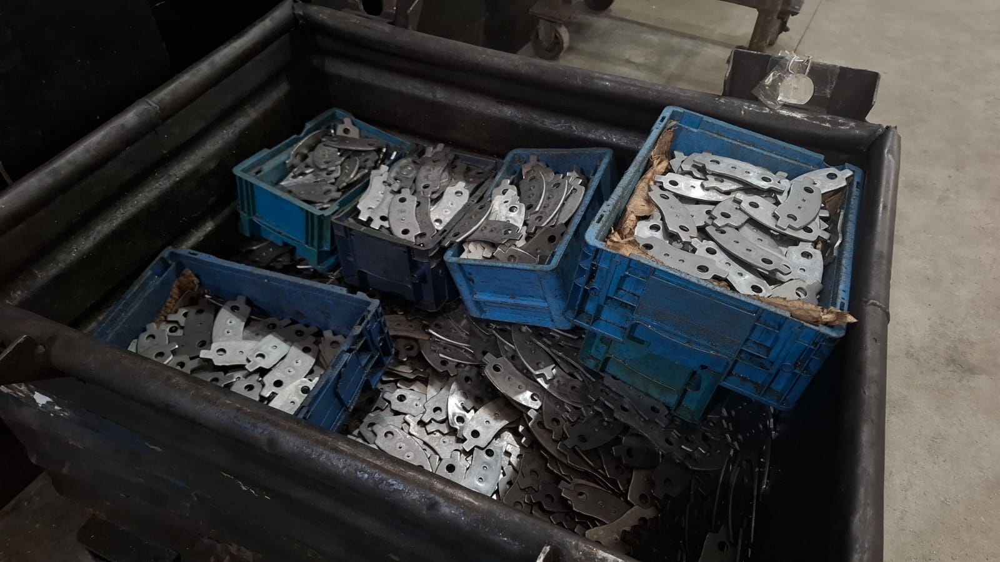
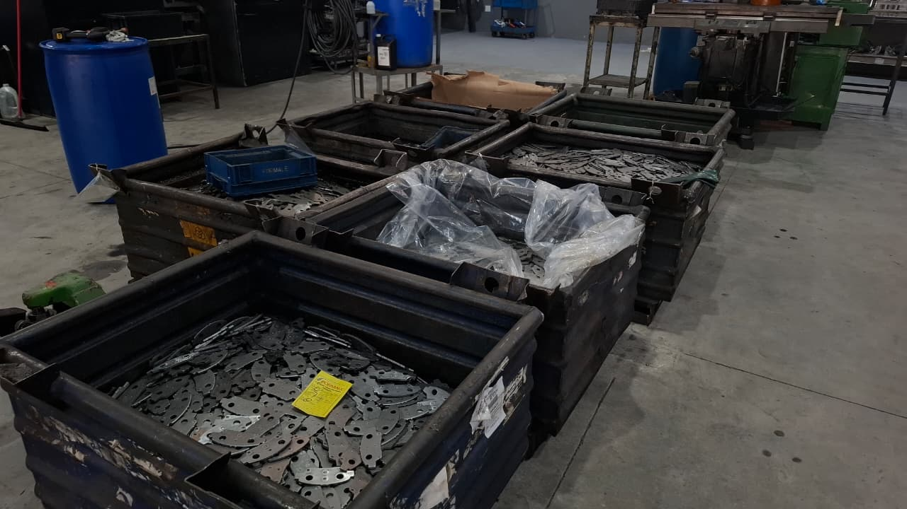
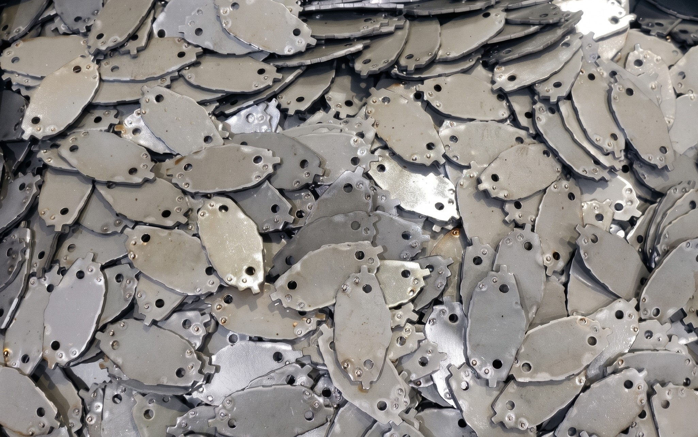
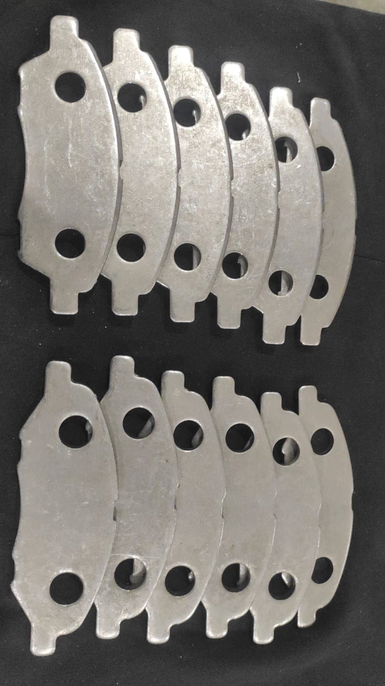
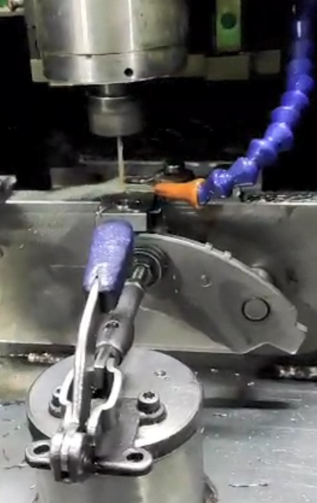
Remoção de material por fresas rotativas controladas por eixos simultâneos.



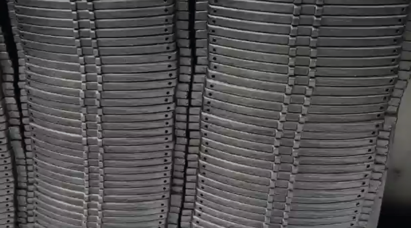
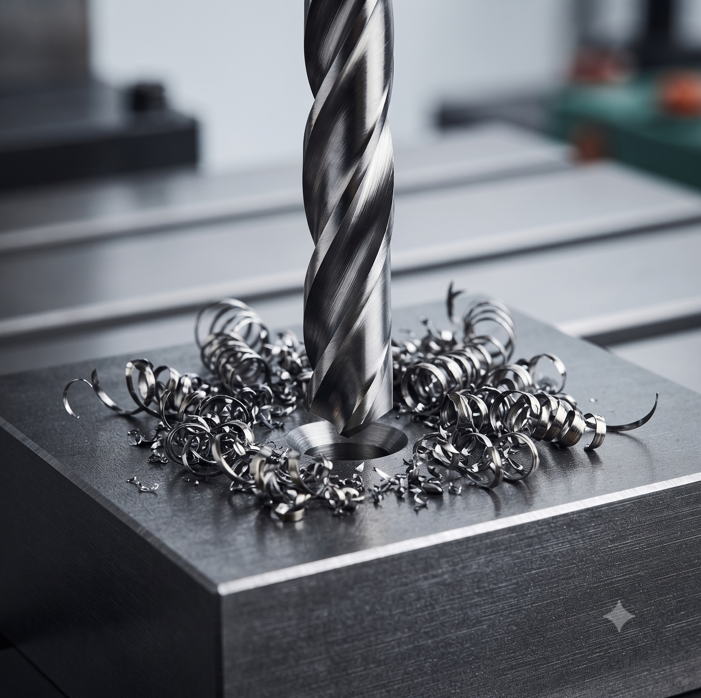
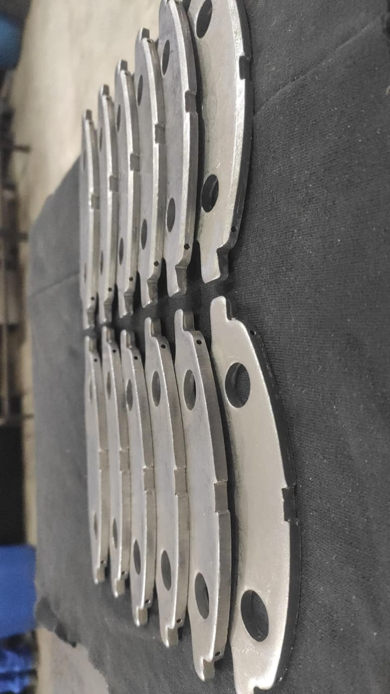
Furos passantes e cegos com posicionamento por CNC.
Seu projeto necessita de outro serviço não especificado? mais de um processo envolvido? A gente avalia tudo junto e entrega um orçamento consolidado.
Falar com a equipe